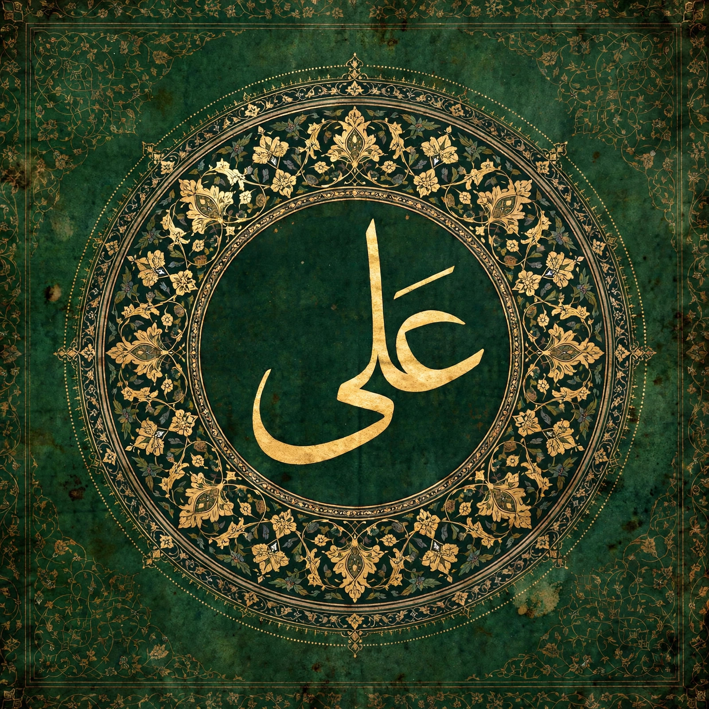

| Ali ibn Abi Talib | |
|---|---|
 | |
| Caliph | 656 – 661 CE (fourth Rashidun caliph) |
| Born | c. 600/601 CE, Mecca, Hejaz |
| Died | c. 661 CE, Kufa, Iraq |
| Burial | Imam Ali Shrine, Najaf, Iraq |
| Parents | Abu Talib ibn Abd al-Muttalib; Fatima bint Asad |
| Spouse | Fatima bint Muhammad; others after her death |
| Children | Hasan; Husayn; Zaynab; Muhammad ibn al-Hanafiyya; Abbas; and others |
Ali ibn Abi Talib (Arabic: عَلِيّ بْن أَبِي طَالِب; c. 600/601 – 661 CE) was a cousin, son-in-law, and companion of the Prophet Muhammad, and one of the central figures of early Islam. He was the fourth caliph of the Rashidun Caliphate (656–661) in Sunni tradition, and in Shia Islam he is regarded as the first Imam and the rightful immediate successor of Muhammad. Renowned for his courage, piety, eloquence, and learning, Ali is venerated across the Muslim world; the dispute over his claim to leadership is the origin of the Sunni–Shia division.
Ali was born in Mecca to Abu Talib, chief of the Banu Hashim clan, and Fatima bint Asad; a well-known tradition places his birth inside the Kaaba. When famine struck Mecca, Muhammad — who had himself been raised in Abu Talib's household — took the young Ali into his own home. Ali was among the very first to accept Islam, traditionally the first male to do so, aged about nine to eleven. On the night of Muhammad's migration (Hijra) to Medina in 622, Ali slept in the Prophet's bed to deceive the assassins sent to kill him — the night known as Laylat al-Mabīt — before following to Medina himself.
In Medina Ali married Muhammad's daughter Fatima, with whom he had Hasan and Husayn, the Prophet's beloved grandsons. He fought in nearly all the early battles of the Muslim community — at Badr, Uhud, and the Trench — and won special fame at Khaybar (628) as the standard-bearer who overcame the fortress's champion. He served as scribe of the Treaty of Hudaybiyyah and was entrusted with important missions, including delivering the opening of Surah al-Tawba at Mecca. Shia tradition holds that Muhammad designated Ali as his successor at the pond of Khumm (Ghadir Khumm) on the return from the Farewell Pilgrimage in 632 — a reading of the event that Sunni tradition interprets as an expression of esteem rather than appointment.
After Muhammad's death, the caliphate passed successively to Abu Bakr, Umar, and Uthman, while Ali served as an adviser and withheld public challenge. When Uthman was assassinated by rebels in 656, Ali was acclaimed caliph in Medina, but inherited a community on the brink of civil war — the First Fitna. A coalition led by Aisha, Talha, and Zubayr demanded punishment of the assassins and met Ali at the Battle of the Camel near Basra (656), where Talha and Zubayr were killed and Aisha retired to Medina. Ali moved his capital to Kufa and next confronted Muawiya, the governor of Syria and kinsman of Uthman, who refused allegiance. Their armies met at Siffin (657); when Muawiya's soldiers raised copies of the Quran on their lances, Ali was pressed by his own men to accept arbitration. The inconclusive arbitration alienated a faction of Ali's supporters, who seceded as the Kharijites ("those who went out") and were defeated by Ali at Nahrawan (658). Muawiya meanwhile consolidated Syria and Egypt.
In Ramadan of 40 AH (January 661), as Ali prayed in the Great Mosque of Kufa, the Kharijite Abd al-Rahman ibn Muljam struck him with a poisoned sword; Ali died two days later. He was buried in secret, and the site at Najaf — the Imam Ali Shrine — became one of the holiest places in Shia Islam. Ali's sermons, letters, and sayings were compiled centuries later as Nahj al-Balagha ("The Peak of Eloquence"), among the most influential works of Arabic literature. Revered titles include Amīr al-Muʾminīn ("Commander of the Faithful"), Asadullah ("Lion of God"), and — in Shia usage — the first of the Twelve Imams. His descendants through Fatima, the Alids, figure throughout Islamic history, and his shrine cities of Najaf and Karbala anchor Shia scholarship and pilgrimage to this day.
See also: Husayn ibn Ali · Battle of Karbala · Rashidun Caliphate · Nahj al-Balagha